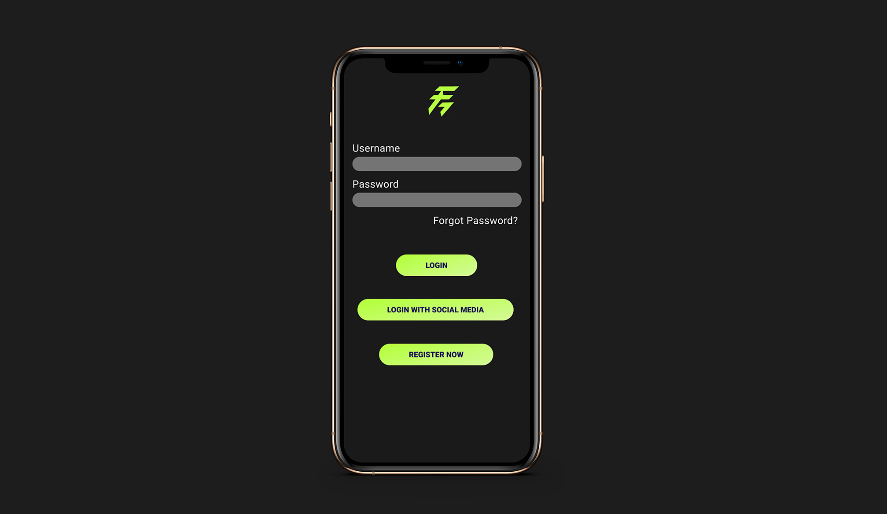
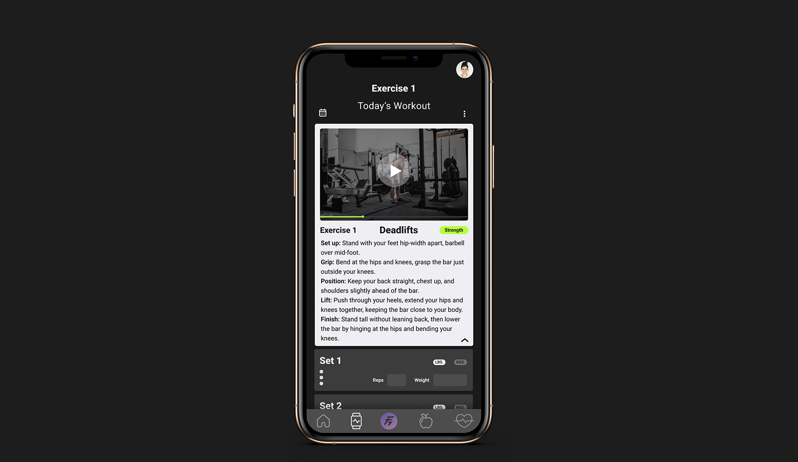
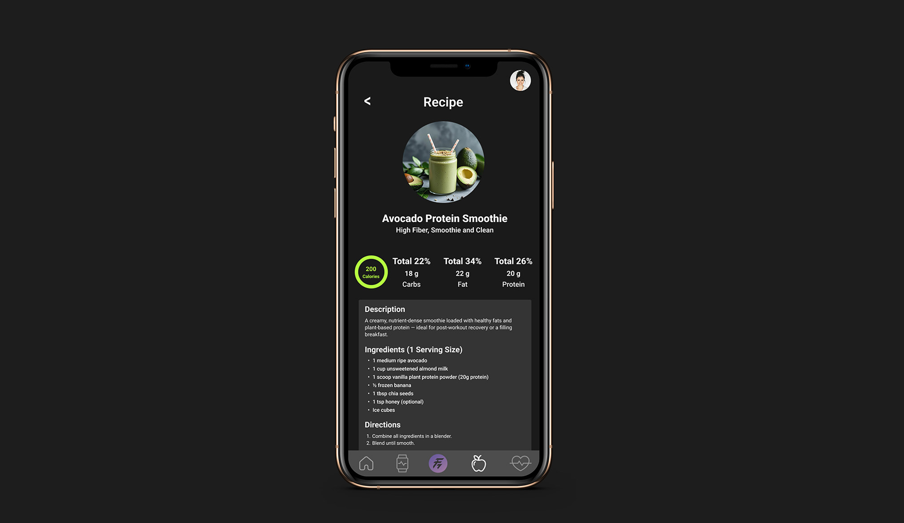

FitNudge
An all-in-one fitness companion
Movement, nutrition, wellness, progress and community in one app, so people stop switching between tools and stay consistent through personal nudges. A UT Austin UI/UX certification project.
How might we design the ultimate personal fitness companion?
People struggle to stay consistent because their tools are fragmented and impersonal. One app for workouts, another for meals, a third for meditation, and nothing that notices when a routine slips.
Research
Survey, requirements and success metrics.
Structure
IA and user flows.
Wireframes
Low-fidelity flows for every area.
System
Tokens, type scale, components.
Prototype
High-fidelity Figma flows.
Success metric: consistency
Workouts logged per week, tracked against the user’s own goal.
Success metric: engagement
Click-through from a nudge to a log, and challenges joined.
The name
After ElevateYou, LevelUp, FitPulse and VibeUp, FitNudge won: a companion that nudges, not nags.
Twenty people, forty-eight hours.
A Google Forms survey shared on Instagram, Discord and Facebook. 75% of participants were women and half were 25 to 35. Most already trained three or more days a week, so the problem wasn’t motivation to start but keeping it going.
Jessica Brown
Marketing coordinator, Austin, TX
- Routine
- 4–5 workouts a week, lifting and yoga, journals daily
- Goals
- Build muscle, lose fat, keep balance
- Pain
- Loses motivation without community; tracking feels like a chore
- Wants
- Mood tracking, dashboards, rewards
Adrian Cruz
UX designer, Los Angeles, CA
- Routine
- 4–5 lifting sessions a week; loves efficient tools
- Goals
- Gain muscle, avoid burnout and injury
- Pain
- Generic apps, poor wearable sync, over- or under-tracking
- Wants
- Clean UI, progress graphs, gym-specific libraries
Routines break
Consistency drops when schedules change.
Value unclear
Cost vs. value, and progress isn’t visible.
App fatigue
Low customization, too much switching.
Six areas, four tabs, one profile.
Every feature had to answer a research finding. The structure keeps the bottom navigation to four destinations, with personal programs one tap away.
Onboarding
Goals, experience and preferences shape every recommendation.
Movement
Plans, daily logs, weekly splits, progressive overload, wearable sync.
Nutrition
Macro targets, meal logs, weekly check-ins, saved recipes.
Wellness
Meditation, breathing, journal prompts, sleep tips.
Progress
Calendar, trends, badges and challenges.
Community
Friends, groups, monthly challenges, shared playlists.
Bottom navigation with Profile at the top level. Programs opens the three personal areas.
View the IA in FigmaChoose a flow, then try it in Figma.
A dark interface with a lime accent keeps workout screens readable in a bright gym and makes the next action obvious. Each flow links to its interactive prototype and wireframes.

Onboarding
A simple three-step flow with social sign-in, clear input hierarchy and a success confirmation to set expectations.

Movement
Today’s workout, set logging, video and notes, with swipe to complete. Built for fast, focused sessions between sets.

Nutrition
Logging for meals and weight, plus trend views for calories, macros and body metrics to reinforce the habit loop.
Accessible by default, ready to test.
- WCAG-aligned contrast, visible focus states and a semantic hierarchy
- Thumb-friendly tap targets and concise microcopy, mobile-first
- Design tokens and components with variants and constraints for speed and consistency
FitNudge folds fragmented tools into one personal, habit-forming experience, ready for usability testing and built to grow through nudges, progress feedback and community accountability.